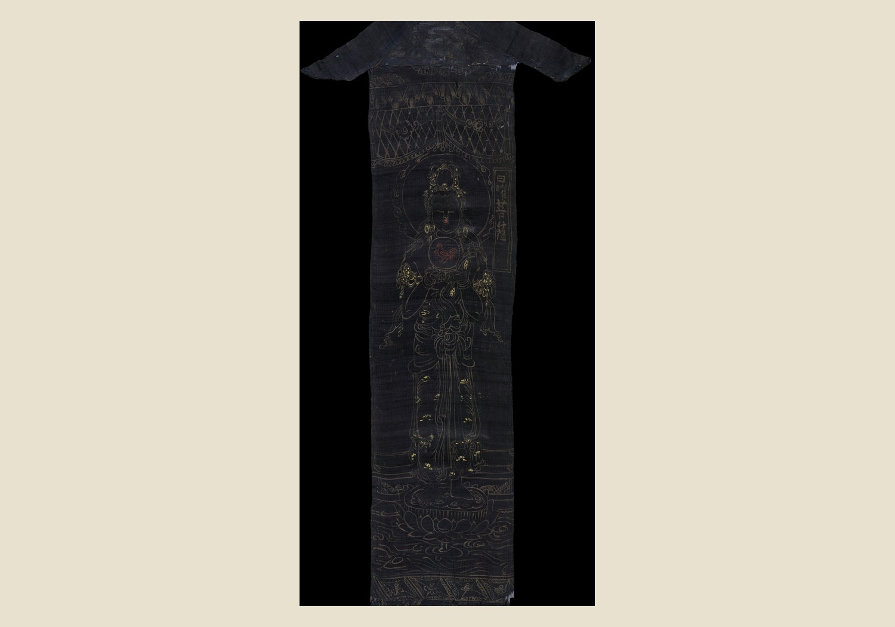
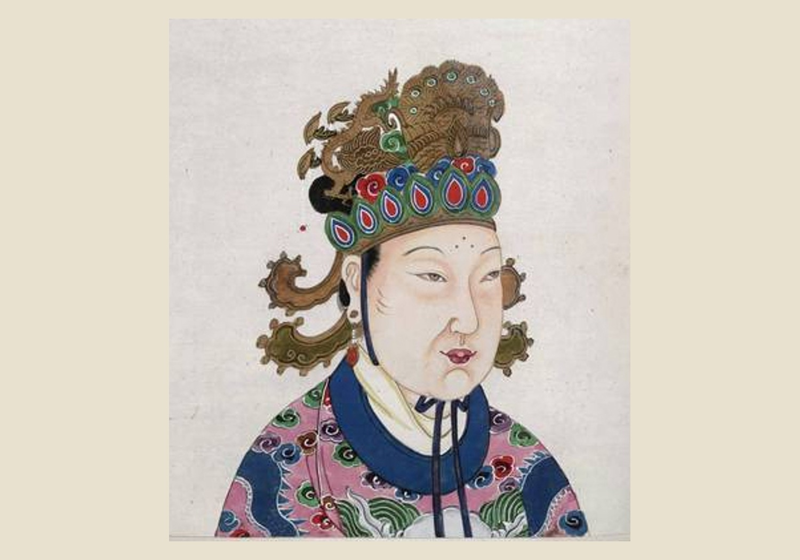
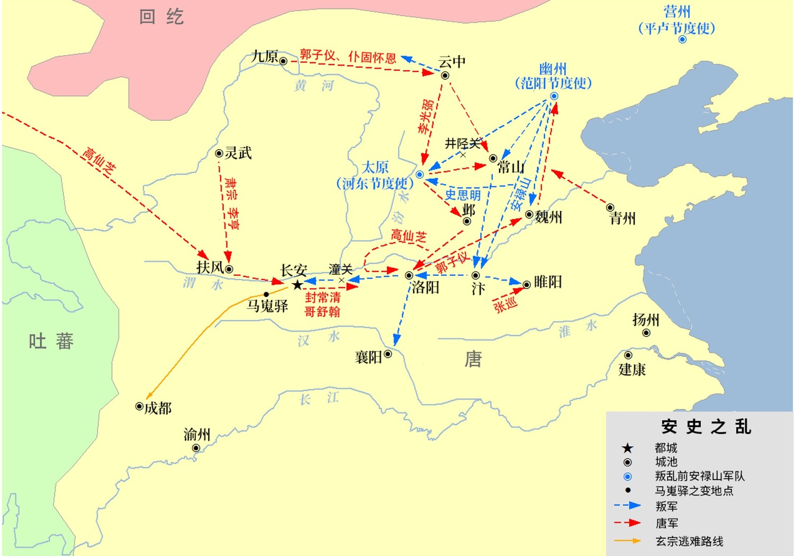
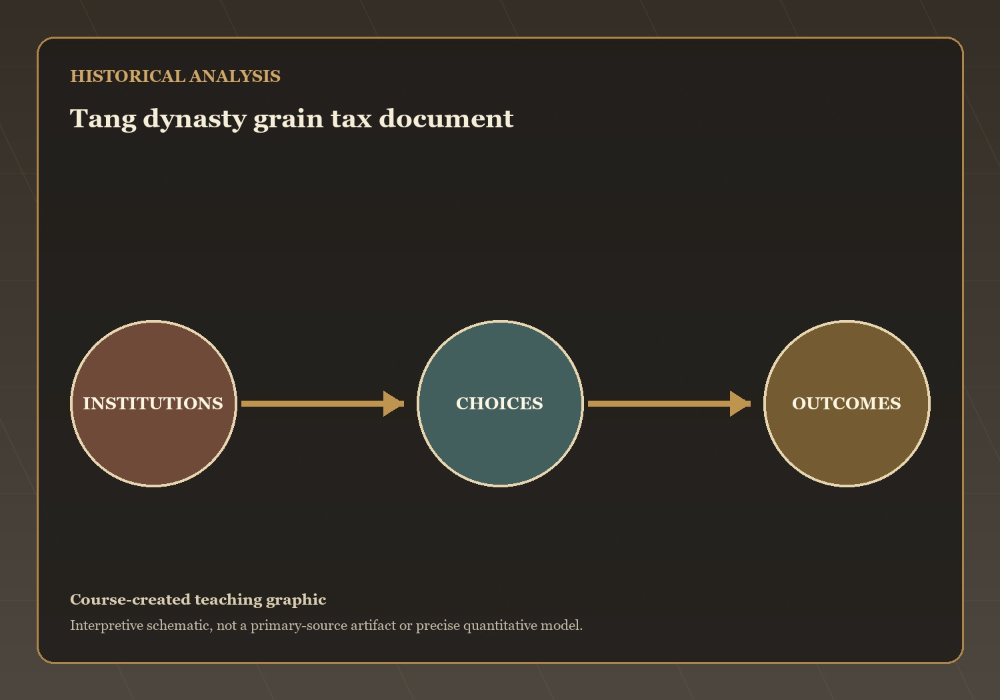
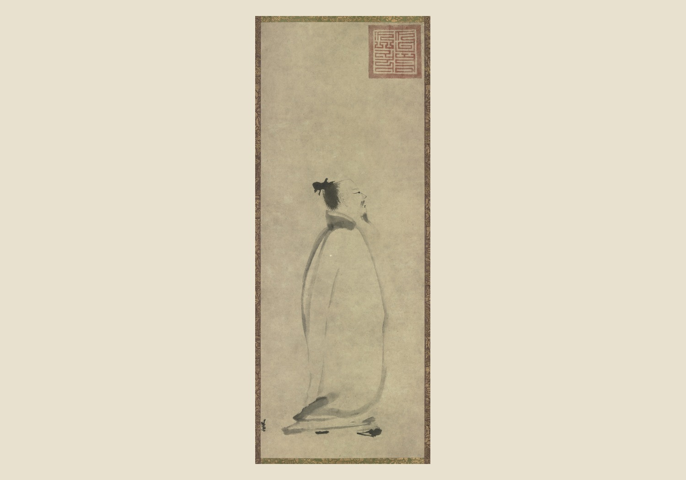
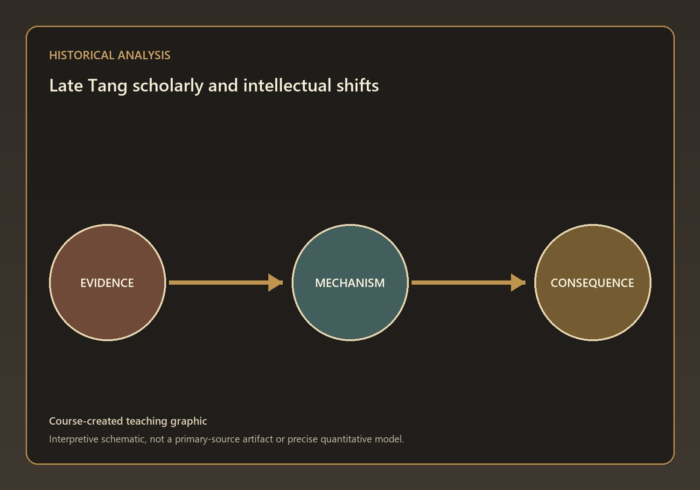
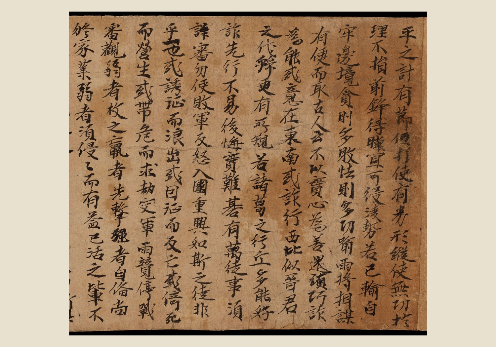

Questions and Problems
Mechanisms and Consequences
This lecture has treated how religious politics, female rulership, poetry, rebellion, commerce, and intellectual reinvention transformed the later Tang as a connected…
Q4 — evidence, mechanism, and consequence

Visual evidence for Q4
Buddhism flourished during the Tang Dynasty and became deeply integrated into Chinese society. Monasteries served as religious centers, schools, banks, landlords, and charitable institutions
What mechanism best explains this outcome? State your answer to Q4 as a causal claim.
Q6 — evidence, mechanism, and consequence

Visual evidence for Q6
Empress Wu rose from the imperial harem to become the only woman in Chinese history to rule as emperor in her own name. In…
What mechanism best explains this outcome? State your answer to Q6 as a causal claim.
Q7 — evidence, mechanism, and consequence

Visual evidence for Q7
The rebellion resulted largely from changes in Tang military organization. The older fubing militia system had declined and was replaced by professional frontier armies…
What mechanism best explains this outcome? State your answer to Q7 as a causal claim.
Q8 — evidence, mechanism, and consequence

Visual evidence for Q8
After the An Lushan Rebellion, the equal-field system largely collapsed and taxation became based on actual landownership. The government increasingly relied on indirect revenue…
What mechanism best explains this outcome? State your answer to Q8 as a causal claim.
Q9 — evidence, mechanism, and consequence

Visual evidence for Q9
Poetry occupied a central place in Tang intellectual and cultural life. Mastery of regulated verse was tested on civil service examinations, encouraging literary achievement…
What mechanism best explains this outcome? State your answer to Q9 as a causal claim.
Q10 — evidence, mechanism, and consequence

Visual evidence for Q10
Han Yu believed that Buddhism had diverted Chinese society from its proper moral foundations. He advocated a revival of Confucian teachings by returning directly…
What mechanism best explains this outcome? State your answer to Q10 as a causal claim.
Q11 — evidence, mechanism, and consequence

Visual evidence for Q11
The discovery of the Dunhuang documents provided historians with an unprecedented view of everyday life in Tang China. The collection includes religious texts, contracts…
What mechanism best explains this outcome? State your answer to Q11 as a causal claim.
The open question: which development in this lecture most changed the range of choices available to ordinary people, and is that change visible in…
Diplomacy and the Medieval Economic Revolution — the next stage of the course narrative.
→ / Space: Next | ←: Previous | S: Notes | F: Fullscreen | O: Overview | ESC: Close popup